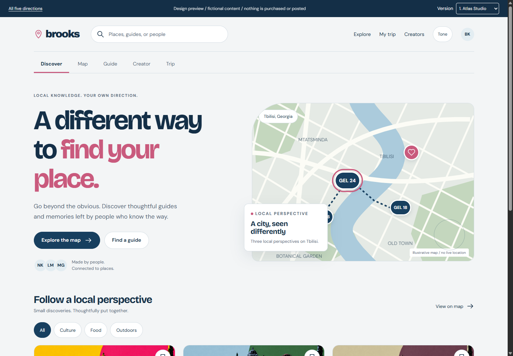
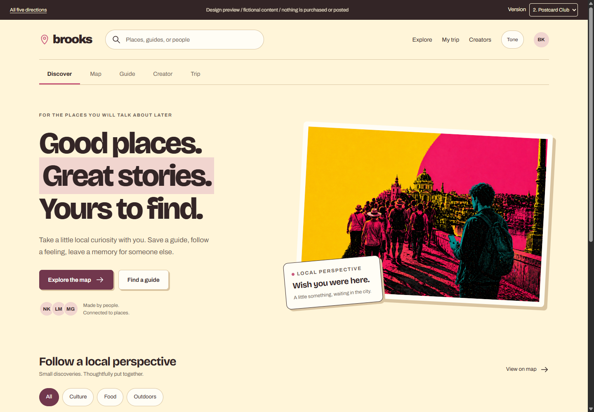
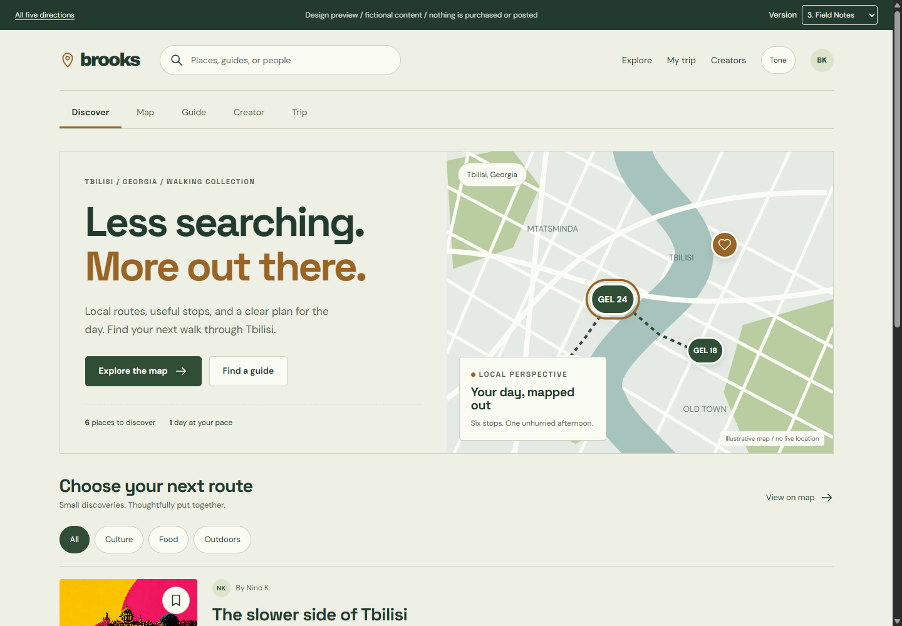
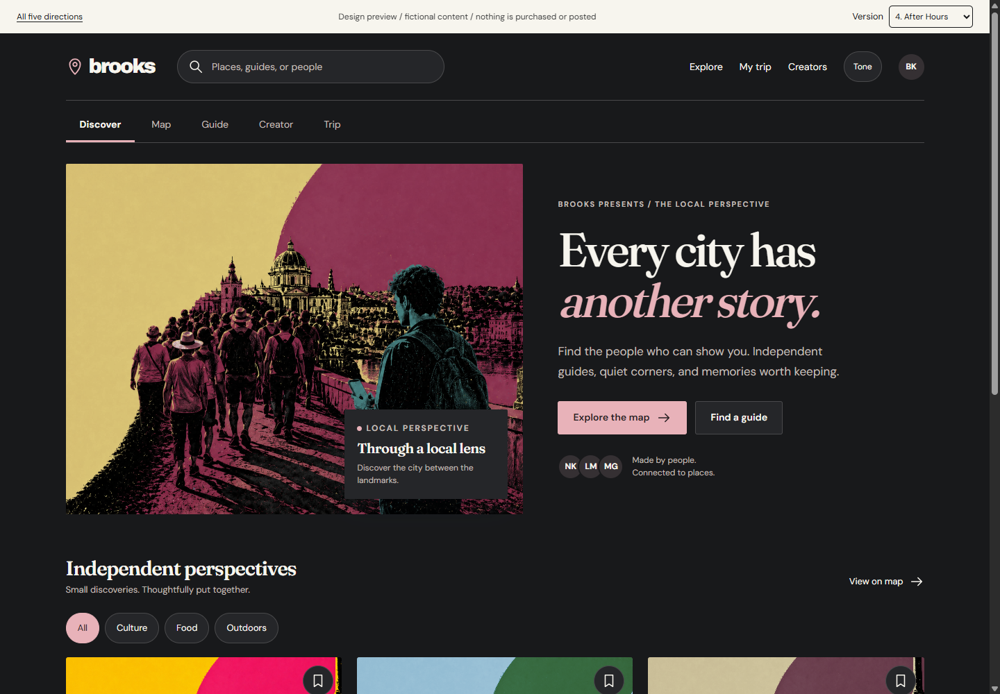
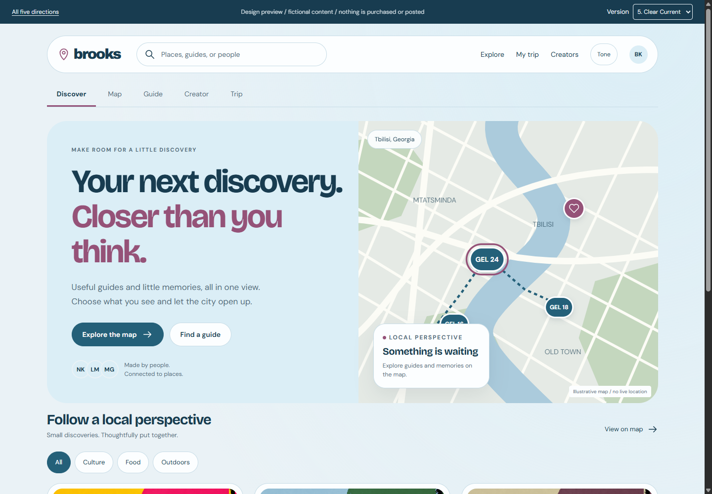

01
Atlas Studio
Editorial cartography. Cool-paper surfaces, deep blue type, restrained pink signals, tight guide cards.
Open interactive previewBrooks visual system review / 5 September 2026
Each prototype is a self-contained, non-production preview of discovery, map, guide, creator, and trip flows. It uses fictional people, prices, guides, map locations, and no live APIs, payments, or tracking.

Editorial cartography. Cool-paper surfaces, deep blue type, restrained pink signals, tight guide cards.
Open interactive preview
Warm paper, stamps, offsets, and collectable local stories. The most playful option.
Open interactive preview
Utility-first outdoor collection. Forest and ochre, compact route rows, calm planning emphasis.
Open interactive preview
Cinematic creator culture. Dark gallery backdrop, large art direction, stronger editorial voice.
Open interactive preview
Bright, rounded, mobile-forward utility. The closest evolution of a conventional map product.
Open interactive previewDecision guide
| Version | Best when | Risk / trade-off |
|---|---|---|
| 01 Atlas Studio | Maps, guides, reviews, saved content, and creator discovery must all read clearly. | Needs disciplined use of the pink accent to stay distinctive. |
| 02 Postcard Club | Brooks should feel like a memorable local-culture brand first. | Decorative elements must not compete with real maps and dense trip data. |
| 03 Field Notes | Routes, walking, itinerary utility, and trust matter most. | More functional than expressive for creator-led content. |
| 04 After Hours | Creator identity and discovery are the primary commercial differentiators. | Dark imagery can make map and accessibility states harder to manage. |
| 05 Clear Current | Fastest path to a broadly familiar, mobile-safe map product. | Least distinctive of the five. |